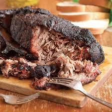

Tasty Butt!

Description:
A well smoked boston butt cannot be properly described in words.
This is one of those things that you cook and smell for the next 5
wonderful days, it makes you realize just how important pigs are!
One of the best parts of this recipe is that the crazy amount of time is
totally worth it. This is legit a great thing to cook up any weekend!
Ingredients:
- Boston Butt
- Butt Rub
- Apple Cider Vinegar
- Time
Steps:
- Allow your butt to reach a room temperature (an hour or so)
- Trim excess fat and cover with butt rub
- Place into smoker at 250-300 degrees
- Maintain that temp and lightly sprits with vinegar/water every hour or so
- After 4-5 hours wrap in foil and place in a 275 degree oven
- Let it slowly finish in the oven for a couple hours and then eat it!